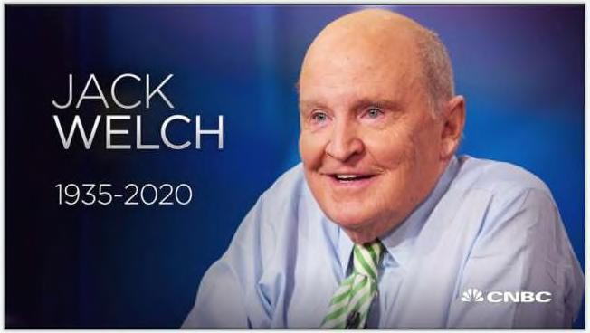

vài trường hợp ngoại lệ, [quỹ chiến thuật] thu được ít hơn, dễ bay hơi hơn hoặc phải chịu nhiều rủi ro giảm giá” như quý chuyển nhượng. TT DMII \ÌI|| (ác nhà đầu tư cá nhân cũng mắc phải điều này khi thực hiện các khoản đầu ư của riêng họ. Theo Morningstar, nhà đầu tư quỹ cổ phần trung bình hoạt động kém hơn số tiền họ đầu tư nửa phân trăm mỗi năm — kết quả của việc mua và bán khi lẽ ra họ chỉ nên mua và nắm giữ. lều trớ trêu là bằng cách cố gắng tránh giảm giá, (ác nhà đầu tư cuối cùng hải trả gấp đôi. tở lại với 6E. Một trong những sai lầm của nó bắt nguồn từ thời kỳ cựu C0 lack Welch. Welch trở nên nổi tiếng vì đảm bảo thu nhập hàng quý trên mỗi cổ phiếu vượt qua ước tính của Phố Wall. Ông ấy là kiện tướng. Nếu các nhà hân tích Phố Wall kỳ vọng $0.25 / cổ phiếu, Jack sẽ đưa ra $0.26 bất kể tình trạng kinh doanh hay nền kinh tế. Ông làm điều đó bảng cách “nhào nặn' các con số - thường kéo lợi nhuận từ các quý trong tương lai sang quý hiện tại để khiến những con số ngoan ngoán chào chủ nhân của chúng. JACk WELCH IS 2929) Forbes đã báo cáo một trong hàng chục ví dụ: “[oeneral Hectric] trong hai năm liên tiếp bán” đầu máy xe lửa cho các đối tác tài chính giấu tên thay vì người dùng cuối trong các giao dịch để lại hầu hết rủi ro về quyền sở hữu với 6E.” Welch không bao giờ từ chối trò chơi này. Ông đã viết trong cuốn sách 'Phơi bày tất cả' của mình: Phản ứng của các nhà lãnh đạo doanh nghiệp với các cuộc khủng hoảng là điển hình của văn hóa GE. Ngay cả khi sổ sách đã kết thúc vào cuối quý, nhiều người ngay lập tức đề nghị bán để bù đắp khoảng cách [thu nhập].
